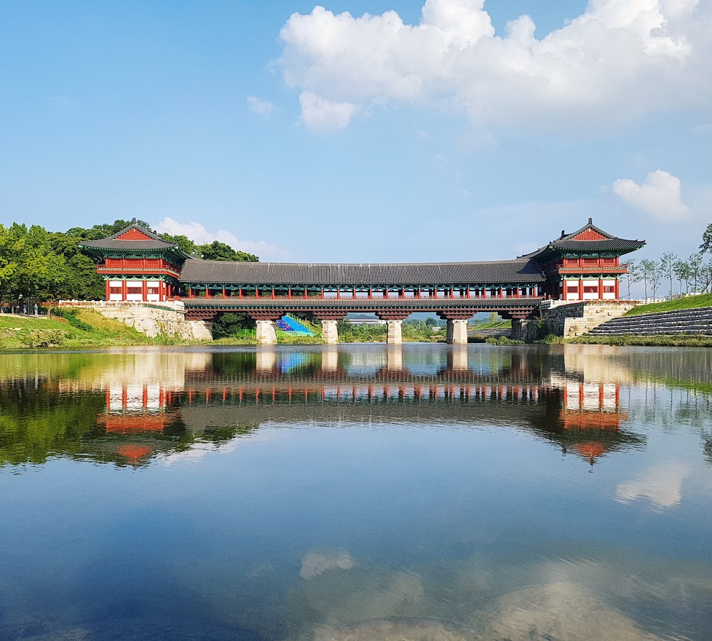

Woljeonggyo Bridge: Gyeongju’s Silla-Era Landmark by Day and After Dark
At a glance: Woljeonggyo Bridge is a reconstructed historic bridge over the Namcheon stream in Gyeongju. Its long, covered wooden form makes it a memorable stop on a heritage walk, especially when the bridge is illuminated after dark. Pair it with nearby Gyochon Traditional Village for an easy outing.
Address: 48 Gyo-dong, Gyeongju, Gyeongsangbuk-do
Google Maps: 4.6/5 from 8,895 reviews (current listing data)
A bridge with roots in the Silla period
Gyeongju was the capital of the Silla kingdom for centuries, and its historic sites are spread throughout the modern city. Woljeonggyo is one of the places where that deep past meets a lively present-day landscape: the bridge crosses the Namcheon, with traditional-style buildings and green riverbanks nearby.
The bridge is associated with the Unified Silla period and is generally dated to 760, during the reign of King Gyeongdeok. What visitors see today is a reconstruction, not an untouched structure surviving from the eighth century. Archaeological investigation and historical records informed the restoration, which was completed in 2018. Keeping that distinction in mind makes the visit more meaningful: the bridge evokes Silla-era architecture while also reflecting modern efforts to interpret and present Gyeongju’s heritage.
What to see and do
Take time to look at the bridge from both the riverbanks and the crossing itself. Its covered wooden passage, curved rooflines and substantial structure give it a different character from a simple modern footbridge. From the water’s edge, you can take in its full length and see how it sits within the surrounding landscape. On the bridge, pause to notice the construction details and the changing views along the stream.
The experience shifts with the light. During the day, the timber and roof are easier to examine, and the river setting feels open and calm. In the evening, illumination can make the bridge a striking focal point for a walk or photographs. Lighting conditions and any display arrangements can change, so do not plan around a specific show or guaranteed schedule. If seeing the lights matters to you, check current local information before setting out.
Woljeonggyo is also a good place to slow down between larger historic attractions. Rather than treating it only as a quick photo stop, walk along the stream, view the bridge from more than one angle and leave time to explore the nearby traditional village area. The combination of a historic-looking landmark, water and traditional streets gives this part of Gyeongju a distinctive atmosphere.
Make it part of a Gyo-dong walk
Gyochon Traditional Village is close by, making it a natural companion to the bridge. You can combine the two as a relaxed stroll through an area known for traditional Korean architecture and Gyeongju’s local history. The village and bridge work well in either order; choose based on the light, your pace and what else is on your itinerary.
For a broader day of sightseeing, treat Woljeonggyo as one stop rather than a stand-alone full-day destination. Gyeongju’s major historical sites are distributed across the city, so check distances and plan your route before adding several locations. A map is especially useful if you are walking, as the most appealing route may follow the stream or pass through the village rather than take the most direct street approach.
Good to know
- Use the map pin: Search for “Woljeonggyo Bridge” or use the address, 48 Gyo-dong, Gyeongju. The bridge is in Gyeongju’s historic area.
- Allow time to walk around: The bridge is worth viewing from outside as well as crossing. Nearby Gyochon Traditional Village can extend the visit.
- Choose your timing for the experience: Daylight is useful for architectural details; after dark, the bridge may be illuminated. Do not assume lighting times without checking locally.
- Check current access information: Conditions, visitor access and any temporary restrictions can change. Consult the official Gyeongju tourism page before travelling if these details are important to your plans.
- Be considerate when taking photos: Share the crossing with other visitors, avoid blocking the walkway and take care near the stream, particularly in low light or wet weather.
- Read the review score in context: Google Maps currently shows a 4.6 rating from 8,895 reviews. Ratings reflect individual visitor experiences and may change over time.
Is Woljeonggyo Bridge worth visiting?
For visitors interested in Gyeongju’s history, architecture or evening scenery, Woljeonggyo is an appealing and easy-to-understand stop. Its reconstructed status is an important part of the story, not a reason to skip it: the bridge offers a vivid sense of how historic forms can shape a modern heritage landscape. Visit for the structure, the riverside setting and the chance to explore Gyo-dong at an unhurried pace.
Useful links
FAQ
Can visitors walk across Woljeonggyo Bridge?
It is a visitor landmark with a covered crossing. Access can change, so check current local information if you need to confirm conditions on the day.
Is Woljeonggyo Bridge better to visit during the day or at night?
Daytime is best for seeing architectural details clearly, while evening offers a different atmosphere when the bridge is illuminated. Lighting times are not guaranteed, so verify locally.
What can I visit near the bridge?
Gyochon Traditional Village is nearby and pairs naturally with the bridge for a relaxed walk through Gyeongju’s historic Gyo-dong area.